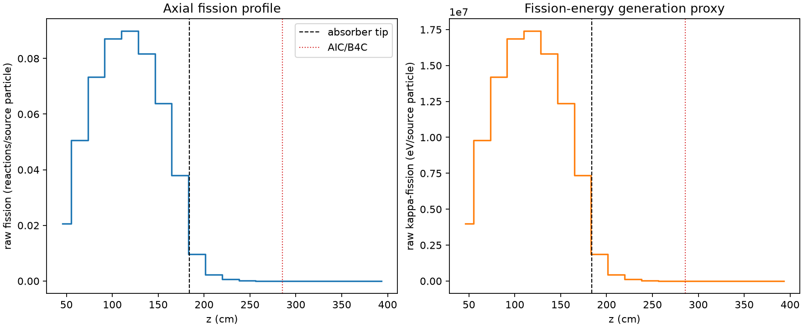
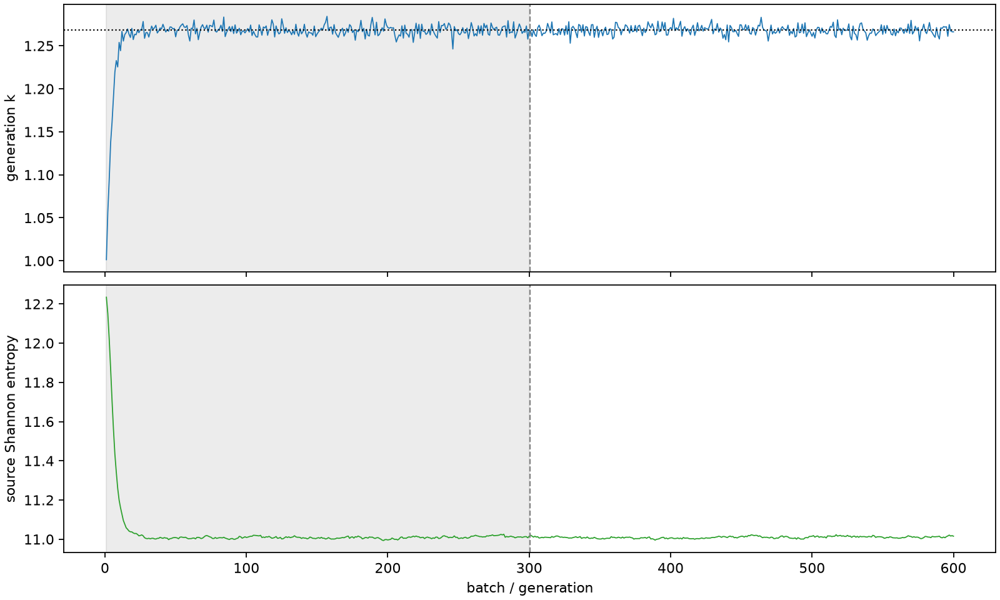

| field | value |
|---|---|
| experiment | V2-STAGE_128_OGRENCI_03-0008 |
| k | 1.2682117892413187 |
| MC standard error | 0.00020446565066169838 |
| seconds | 933.3599794049951 |
| acceptance | not_assessed |
| convergence | review_required |
Completed is output integrity only; physical and statistical review required. Zero tallies do not prove zero production or zero uncertainty.
| diagnostic | value |
|---|---|
| geometric fuel voxels | 5280 |
| zero fission tally voxels | 1020 |
| low signal fuel voxels | 2111 |
| low signal fission share | 9.238115369469913e-05 |
| low signal kappa share | 9.240949938930746e-05 |
| important fission share | 0.950133764806109 |
| previous filter included | 3169 |
| duration estimate s | 1562.5173488400023 |
| actual minus estimate s | -629.1573694350072 |
| fission relative MC error | statistics |
|---|---|
| all_geometric_fuel | {"voxels": 5280, "positive_mean_voxels": 4260, "zero_mean_voxels": 1020, "undefined_relative_error_voxels": 1020, "median": 0.0161286458201641, "p95": 0.9534546973705443, "maximum": 1.0000000000000002} |
| low_signal | {"voxels": 2111, "positive_mean_voxels": 1091, "zero_mean_voxels": 1020, "undefined_relative_error_voxels": 1020, "median": 0.588570179979872, "p95": 1.0, "maximum": 1.0000000000000002} |
| important_95pct | {"voxels": 1942, "positive_mean_voxels": 1942, "zero_mean_voxels": 0, "undefined_relative_error_voxels": 0, "median": 0.006735246844797231, "p95": 0.010655123840842573, "maximum": 0.013292157570808746} |
| outside_previous_filter | {"voxels": 2111, "positive_mean_voxels": 1091, "zero_mean_voxels": 1020, "undefined_relative_error_voxels": 1020, "median": 0.588570179979872, "p95": 1.0, "maximum": 1.0000000000000002} |
| kappa_fission relative MC error | statistics |
|---|---|
| all_geometric_fuel | {"voxels": 5280, "positive_mean_voxels": 4260, "zero_mean_voxels": 1020, "undefined_relative_error_voxels": 1020, "median": 0.016105935808835944, "p95": 0.9534512785127116, "maximum": 1.0000000000000002} |
| low_signal | {"voxels": 2111, "positive_mean_voxels": 1091, "zero_mean_voxels": 1020, "undefined_relative_error_voxels": 1020, "median": 0.5870333511792704, "p95": 1.0, "maximum": 1.0000000000000002} |
| important_95pct | {"voxels": 1942, "positive_mean_voxels": 1942, "zero_mean_voxels": 0, "undefined_relative_error_voxels": 0, "median": 0.006728239427574249, "p95": 0.010644046522126808, "maximum": 0.013278034685992071} |
| outside_previous_filter | {"voxels": 2111, "positive_mean_voxels": 1091, "zero_mean_voxels": 1020, "undefined_relative_error_voxels": 1020, "median": 0.5870333511792704, "p95": 1.0, "maximum": 1.0000000000000002} |
| axial bin | fission share | kappa-fission share |
|---|---|---|
| 1 | 0.03994463503886085 | 0.03994618935139405 |
| 2 | 0.09772358718552344 | 0.0977228195112719 |
| 3 | 0.14175717820143868 | 0.14175593843896567 |
| 4 | 0.16827447650643126 | 0.168272838534491 |
| 5 | 0.17340467970080353 | 0.1734030826456722 |
| 6 | 0.15776606362738074 | 0.15776446480485534 |
| 7 | 0.12325988139296282 | 0.12325868640046793 |
| 8 | 0.0732261509965457 | 0.07322573727098118 |
| 9 | 0.018688418115476817 | 0.01869334654691358 |
| 10 | 0.0044481616239724605 | 0.0044496144212999664 |
| 11 | 0.0011247523478507939 | 0.0011251361273755104 |
| 12 | 0.00028935935390635235 | 0.0002894616540720537 |
| 13 | 7.068486047263455e-05 | 7.070784474532564e-05 |
| 14 | 1.758857451620784e-05 | 1.759174266461005e-05 |
| 15 | 3.352767274417236e-06 | 3.3550155426634186e-06 |
| 16 | 6.913113429025058e-07 | 6.91385671249393e-07 |
| 17 | 2.7865161756547847e-07 | 2.786289506720274e-07 |
| 18 | 5.974362294233322e-08 | 5.967466510764423e-08 |
| 19 | 0.0 | 0.0 |
| 20 | 0.0 | 0.0 |
Histories include the inactive-to-active transition at batch 300. kappa-fission approximates fission energy production, not total heat deposition.

